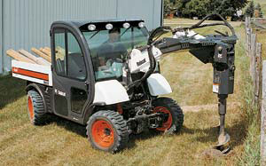

BOBCAT
The Toolcat features a top speed of 18 mph, all-wheel steering, a front-end hydraulic lift capable of hoisting 1,500 pounds and an 18-inch cubic-foot dump bed with a 2,000 pound load capacity.